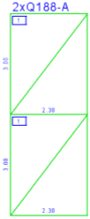
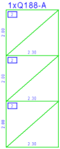
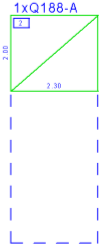
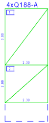

")
Es werden alle Matten dargestellt, die verwertbare Reste (≥ 50 cm Seitenlänge) enthalten. Die verlegten Mattenstücke sind mit einer Diagonalen versehen. Die Teilgrößen werden angeschrieben.
|
Hinweis: |
|
Die Restanzeige wird nicht automatisch nach jeder Verlegung aktualisiert. |

§Wählen Sie in der Funktionsleiste, wie die Reststücke genutzt werden sollen:
Die Mattenstücke werden so zusammengestellt, dass kleine Reststücke anfallen. Es gibt weniger „Schnittmuster“. |
|
Es werden möglichst große Reststücke erzeugt. Dabei entstehen mehr „Schnittmuster“. |
|
Hinweis: |
|
Die gewählte Einstellung wird auch bei der endgültigen Schneideskizze verwendet. |
 |
 |
 |
 |
Großer Rest. |
Kleiner Rest. |
§Setzen Sie den Rahmen per Mausklick an der gewünschten Stelle ab. [Rechteck verschieben].
Die verwertbaren Reststücke werden in der Zeichnung angezeigt.
Siehe auch:
·Matten in der Verlegung anzeigen
Zugehörige Referenzen: